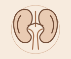

Altus Clinic
ENT &
ENT &
Kidney Care
3rd Floor, AV Complex, Beside Aparna One
Dwaraka Nagar Colony, Shaikpet
Meet our doctors

3,500+Patients cared for by Dr. Chetan
25+ENT camps attended by Dr. Mounika
10+Years of experience · Dr. Chetan
Explore our specialties
ENT and kidney consultations


What we treat
Services offered
ENT Care
Ear, nose, throat, head and neck consultations with Dr. Mounika.

Kidney Care
Kidney evaluation and follow-up with Dr. Chetan.
Visit Altus · Shaikpet, Hyderabad
Tell us what’s troubling you.
Dwaraka Nagar Colony, Shaikpet
Hyderabad, Telangana 500104 99668 81811
Tell us what’s troubling you.
We’ll talk through what comes next.
Bring your questions and any past reports to your ENT or kidney consultation.
3rd Floor, AV Complex, Beside Aparna OneDwaraka Nagar Colony, Shaikpet
Hyderabad, Telangana 500104 99668 81811